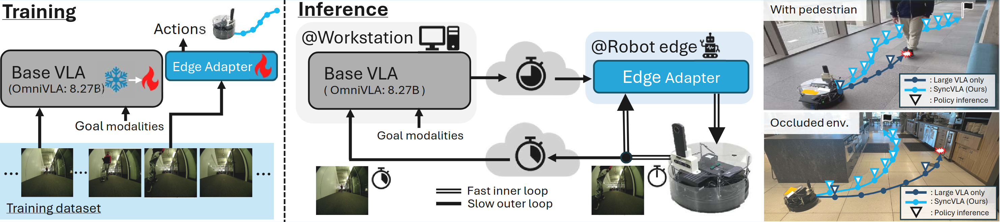
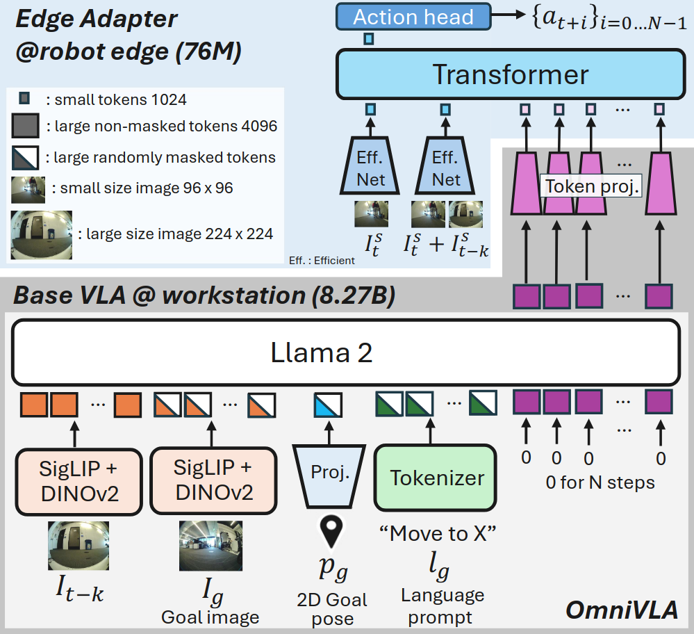
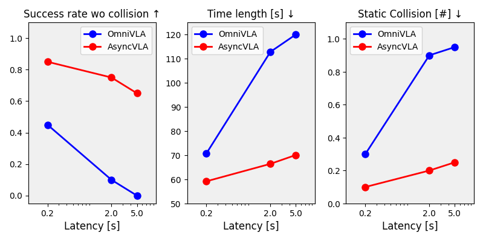

AsyncVLA is an asynchronous control framework that enables real-time deployment of large robotic foundation models while handling network and inference latency.
Robotic foundation models generalize well via internet-scale vision-language representations, but their high computational cost causes latency that breaks the control loop, making them unsafe for real-time deployment. We propose AsyncVLA, an asynchronous control framework that decouples semantic reasoning from reactive execution. Inspired by hierarchical control, AsyncVLA runs a large foundation model on a remote workstation for high-level guidance, while a lightweight onboard Edge Adapter continuously refines actions. To align these asynchronous streams, we introduce end-to-end finetuning and a trajectory re-weighting strategy prioritizing dynamic interactions. On real-world vision-based navigation tasks with delays up to 6 seconds, AsyncVLA achieves a 40% higher success rate than state-of-the-art baselines, bridging semantic intelligence and edge reactivity.
VLAs inherit internet-scale knowledge from VLMs, giving them far superior vision and language understanding compared to models trained from scratch. However, scaling up robot policies comes at the cost of inference speed, which can degrade performance. In particular, longer inference times slow the control loop, causing delays that impact overall system behavior. This paper addresses the question: how can large robotic foundation models be deployed on the edge without being limited by computational cost?
These challenges are especially pronounced in mobile robots. With a limited ego-centric field of view, robots cannot fully perceive their surroundings from a single observation. Dynamic obstacles, such as pedestrians, exacerbate this issue. Mobile robots must continuously update observations and generate actions based on the latest sensory inputs. Scaling foundation models increases computational load, directly reducing performance in real-world navigation tasks.
We propose AsyncVLA, an asynchronous navigation system that combines the rich language-visual understanding of robotic foundation models with fast, reactive control. To achieve reactive behavior without losing semantic understanding, AsyncVLA integrates three key components: (1) a lightweight onboard Edge Adapter for action refinement, (2) automatic data re-balancing to encourage responsiveness, and (3) end-to-end training to better align the base VLA with the Edge Adapter. During inference, AsyncVLA separates the system: the base VLA runs on a high-performance workstation, while the Edge Adapter operates on the robot’s controller, processing observations with minimal latency for rapid reactions.
We build AsyncVLA on OmniVLA, a vision-based robotic foundation model for navigation, which serves as our base VLA. OmniVLA generates actions conditioned on multiple goal modalities, including 2D goal poses, language instructions, and egocentric goal images. It interprets these modalities using large-scale visual encoders (SigLIP and DINOv2) and a language model (LLaMA2 7B).
Since the Edge Adapter handles action generation, we feed it OmniVLA’s action token embeddings, which encode both action features and the semantic-visual information interpreted by OmniVLA. These embeddings have a high dimensionality of 8×4×4096 (action chunk size × action dimension × embedding size). Feeding them directly into the Edge Adapter would increase onboard network size and computational cost. To address this, we apply a **token projector** with two MLP ResNet blocks to compress each token from 4×4096 to 1024 dimensions, enabling efficient transmission from the workstation to the robot during inference.
We evaluate AsyncVLA on 2D goal pose– and language-conditioned navigation tasks in challenging, cluttered indoor and outdoor environments, including settings with weak WiFi connectivity.
Since our AsyncVLA can react to the latest observation without delay, our AsyncVLA allows the robot to yield to the pedestrian, pass safely without collision, and then proceed toward the goal. In contrast, ``OmniVLA'', which runs inference on a workstation, suffers from delayed action updates and consequently collides with the pedestrian, failing to reach the goal.
We conducted experiments involving various interactions with the robot. The following videos present representative samples from these experiments.
We evaluate policy robustness under artificially introduced workstation delays of 0.2 s, 2.0 s, and 5.0 s, while the robot’s onboard controller computes actions at its maximum rate. As shown in the following graph, AsyncVLA outperforms OmniVLA even at 0.2 s latency, with the performance gap widening as delays increase. The onboard Edge Adapter adapts the base VLA’s guidance based on current observations, whereas OmniVLA generates actions from stale data, causing navigation performance to degrade under higher latencies.
The videos compare AsyncVLA with the strong baseline, OmniVLA. At 5 Hz without delay, both perform well, but at 0.2 Hz with artificial delay, OmniVLA overshoots and fails to navigate. In contrast, AsyncVLA remains reliable, as the onboard Edge Adapter quickly adjusts actions and guides the robot toward the goal.
We conducted quantitative experiments in cluttered environments, with and without pedestrians, navigating the robot to goals up to 30 m away. The following videos show representative samples from experiments without pedestrians.
Since AsyncVLA builds on OmniVLA, it inherits the ability to translate high-level language and visual understanding into actions, enabling effective instruction-following. In our evaluations, AsyncVLA remains robust to out-of-distribution language instructions, achieving performance comparable to OmniVLA.
@misc{hirose2026asyncvla,
title={AsyncVLA: An Asynchronous VLA for Fast and Robust Navigation on the Edge},
author={Noriaki Hirose and Catherine Glossop and Dhruv Shah and Sergey Levine},
year={2026},
eprint={xxxx.xxxxx},
archivePrefix={arXiv},
primaryClass={cs.RO},
url={https://arxiv.org/abs/xxxx.xxxxx},
}